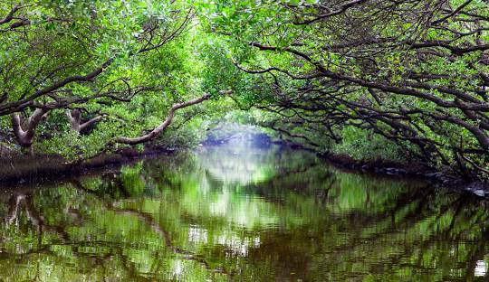

四草綠色隧道

四草綠色隧道
四草綠色隧道在台江國家公園內，裡面有溼地及豐富的生態資源，可以坐船遊覽由紅樹林交織成的綠色隧道，潮間帶的招潮蟹、彈塗魚與紅樹林，體會不一樣的大自然感受。
go back四草綠色隧道在台江國家公園內，裡面有溼地及豐富的生態資源，可以坐船遊覽由紅樹林交織成的綠色隧道，潮間帶的招潮蟹、彈塗魚與紅樹林，體會不一樣的大自然感受。
go back井仔腳瓦盤鹽田是北門的第一座鹽田，西元1818年開始曬鹽，因人工成本過高，在2002年停止曬鹽，鹽田漸漸荒廢，目前開發為觀光景點，遊客在此可體驗傳統曬鹽、挑鹽與收鹽。
go back赤崁樓的前身為1653年荷蘭統治時期興建的普羅民遮城，在地人稱為番仔樓，在清代已傾倒，而今日的赤崁樓，大部分是漢人在普羅民遮城遺跡上陸續興建的廟宇，包括海神廟與文昌閣。
go back台南孔廟是台灣最早成立的孔廟，建於西元1665年，是臺灣最早的孔廟。清朝時招收學生入學，因此稱作「全臺首學」。
go back